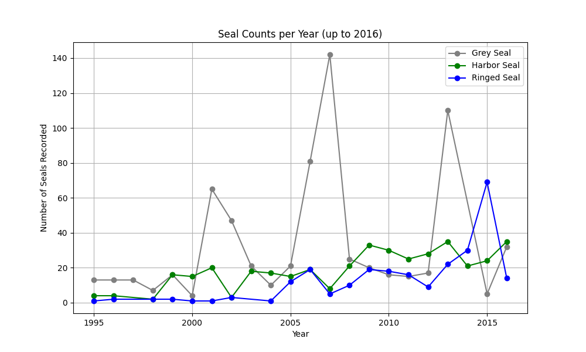
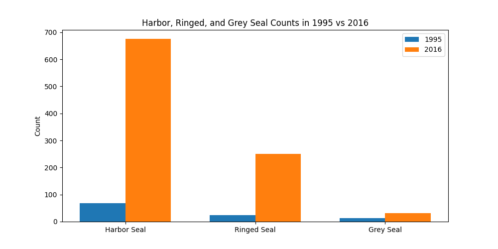

Where are these seal species located in Sweden?
Interactivity Features
- Scroll to zoom in or out
- Hover to see the region occupied by seals
- Click on a region to expand it and see more detailed clustering information
Analysis
High-density clusters (orange) indicate areas with many observations, while green represents few points. Ringed seals are concentrated in the northern Gulf of Bothnia and along the southern west coast, suggesting that these regions provide favorable habitat and prey availability. Harbor seals appear in smaller, scattered clusters near Stockholm and northern coasts, indicating lower but present populations, while grey seals are localized in a few northern and central coastal areas, reflecting their more restricted habitat. Overall, seal populations are not evenly distributed but instead cluster in regions that support their ecological needs. These patterns highlight areas where conservation and monitoring efforts should be prioritized to support recovery and inform sustainable fishery and habitat management in the Baltic Sea.
Seal Counts Over Time (1995-2016)
Analysis
All of the species experienced an increase from 1995 compared to 2016, however the increase over time is not entirely smooth or linear. There are many spikes in the data, specifically for the grey seals, where the populations are frequently found fluctuating. The harbor and ringed seals population growth also fluctuates a bit over time, but the spikes in data are more stable compared to the grey seals. Ultimately, these trends indicate that the seal recovery was not a steady process, and that many external factors may have influenced these trends. Looking at these trends allows us to identify potential issues that are individual to a species.
Population Estimates From 1995 to 2016
Analysis
The blue bars represent the seal population counts in 1995. While the three species all differ in counts, it is apparent that all populations are relatively low during this time. Compared to the orange bars, which represent the populations in 2016, there is a clear increase that all species experienced some form of recovery as all populations increased. However, the recovery levels differ amongst species, with the harbor seals having the highest increase, compared to the grey seals having the lowest increase. This is significant as it highlights the differences between species, emphasizing the need for specific recovery strategies geared towards the different populations.
Individual Seal Dispersion Through the Years (1995-2020)

Interactivity Features
- Use the slider or buttons to navigate through the years
Analysis
The map illustrates the distribution of harbor seals (green), grey seals (grey), and ringed seals (blue) along the Swedish coast. Unlike the high-density clusters highlighted in the first visualization, this map emphasizes individual observations, showing that harbor seals and grey seals often share the same coastal areas, particularly along the southwestern and southern coasts, suggesting overlapping habitat use. Ringed seals remain largely confined to the northern Baltic Sea near the Gulf of Bothnia, reflecting a more specialized habitat and a preference for a more protected environment. This spatial contrast provides insight into species-specific distribution patterns and can guide targeted conservation and monitoring strategies.